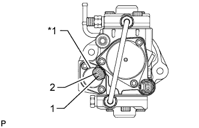
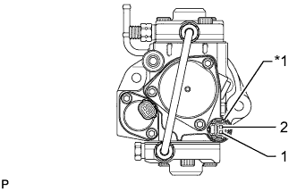

НАГНЕТАЮЩИЙ ТОПЛИВНЫЙ НАСОС (для моделей с DPF) > ПРОВЕРКА |
| 1. ПРОВЕРЬТЕ НАГНЕТАЮЩИЙ ТОПЛИВНЫЙ НАСОС |
|  |
Проверьте клапан регулирования всасывания.
| *1 | Клапан регулирования всасывания |
Измерьте сопротивление в соответствии со значениями, приведенными в таблице ниже.
| Контакты для подключения диагностического прибора | Режим | Заданные условия |
| 1 - 2 | 20°C (68°F) | 1,9-2,3 Ом |
|  |
Проверьте датчик температуры топлива.
| *1 | Датчик температуры топлива |
Измерьте сопротивление в соответствии со значениями, приведенными в таблице ниже.
| Контакты для подключения диагностического прибора | Режим | Заданные условия |
| 1 - 2 | 20°C (68°F) | 2,32-2,59 Ом |